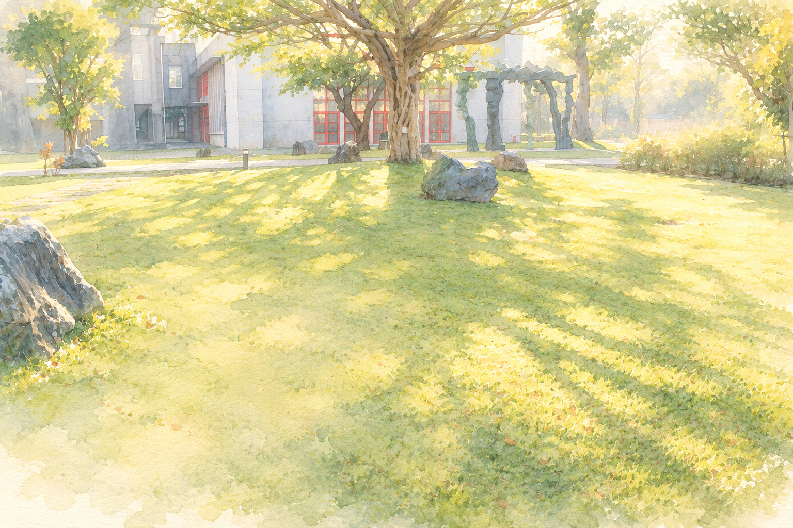
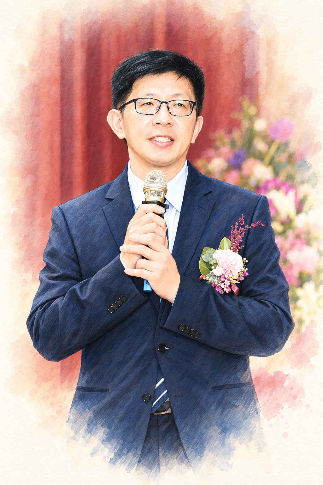

啟發生命
教育是以生命感動生命、以生命啟發生命的歷程。

校長簡歷

國立台北科技大學／技術及職業教育研究所博士班／105～迄今
國立清華大學／統計研究所碩士／88-90
國立成功大學／數學系／84-88
國立基隆商工／校 長 (6年)／108/08~114/07
國立頭城家商／代理 校長 (半年)／99/02~100/07
國立頭城家商／教務處主任(7年)／98-103，106-108
國立頭城家商／學務處主任(3年)／103-106
國立頭城家商／實習處主任(2年)／96-98
教育理念
教育是以生命感動生命、以生命啟發生命的歷程。
教育是能讓學生學習有成、教師教學有感，教學相長的志業。
教育是價值創造的歷程，尊重學生的唯一性、相信學生是可塑的、發展是無限的，成就學生做最好的自己。
重要事蹟
擔任103及108學年度宜蘭區免試入學主委學校總幹事，綜理免試入學簡章、報名及分發作業。
規劃頭城家商參與高職優質化十年成果競賽，榮獲產業鏈結全國第一名。
推動頭城家商創新課程參加107學年度商管群全國專題製作競賽榮獲全國第一名(商管群與餐旅群跨域合作)。
承辦全國高中職社區化計畫書審查會議。
參與宜蘭區高中職均質化總計畫學校，100、102學年度計畫榮獲評鑑特優。
規劃頭城家商高職優質化計畫，十年補助近5000萬，精進教師專業、提升教學設備、活化教學，提升學生學習成效。
擔任103-108學年度宜蘭縣12年國民基本教育「適性輔導」宣導講師。
組織成員
03-9324153
信箱t001@gapp.ylsh.ilc.edu.tw
綜理校務領導
03-9324153分機101
信箱t101@gapp.ylsh.ilc.edu.tw
辦理文稿之撰擬、審核及交辦、內部控管、媒體連絡、訪客登記等
03-9324153分機107
校長交辦
歷任校長
陳保宗 34.8
李祖壽 35.8
趙仰雄 38.8
溫 麟 44.8
魏景嶷 45.9
陳永康 57.8
袁福洪 64.3
楊壽喬 71.8
廖俊一 75.2
連明信 80.2
羅富山 82.2
李有賢 87.8
吳清鏞 95.8
王 垠 100.8
張以方 108.8
洪光賢 114.8 現任